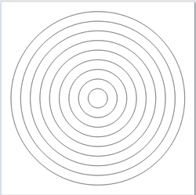
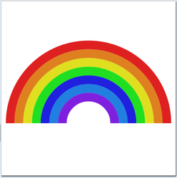
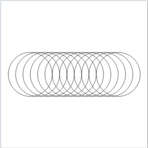
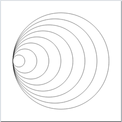
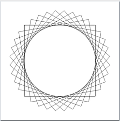
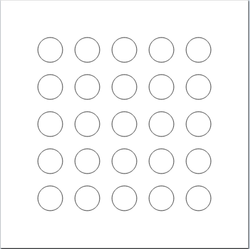
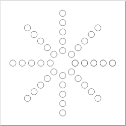
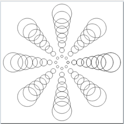
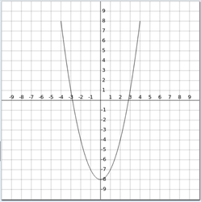

Tema 5: Definiciones de listas por comprensión
Índice
1. Generadores
1.1. Definiciones por comprensión
- Definiciones por comprensión en Matemáticas:
\(\{x^2 : x \in \{2,3,4,5\}\} = \{4,9,16,25\}\) Definiciones por comprensión en Haskell:
λ> [x^2 | x <- [2..5]] [4,9,16,25]
- La expresión
x <- [2..5]se llama un generador. Ejemplos con más de un generador:
λ> [(x,y) | x <- [1,2,3], y <- [4,5]] [(1,4),(1,5),(2,4),(2,5),(3,4),(3,5)] λ> [(x,y) | y <- [4,5], x <- [1,2,3]] [(1,4),(2,4),(3,4),(1,5),(2,5),(3,5)]
1.2. Generadores dependientes
Ejemplo con generadores dependientes:
λ> [(x,y) | x <- [1..3], y <- [x..3]] [(1,1),(1,2),(1,3),(2,2),(2,3),(3,3)]
(concat xss)es la concatenación de la lista de listasxss. Por ejemplo,λ> concat [[1,3],[2,5,6],[4,7]] [1,3,2,5,6,4,7]
Su definición es
concat :: [[a]] -> [a] concat xss = [x | xs <- xss, x <- xs]
1.3. Generadores con variables anónimas
Ejemplo de generador con variable anónima:
(primeros ps)es la lista de los primeros elementos de la lista de paresps. Por ejemplo,λ> primeros [(1,3),(2,5),(6,3)] [1,2,6]
Su definición es
primeros :: [(a, b)] -> [a] primeros ps = [x | (x,_) <- ps]
Definición de la longitud por comprensión
length :: [a] -> Int length xs = sum [1 | _ <- xs]
2. Guardas
- Las listas por comprensión pueden tener guardas para restringir los valores.
Ejemplo de guarda:
λ> [x | x <- [1..10], even x] [2,4,6,8,10]
(factores n)es la lista de los factores del númeron. Por ejemplo,λ> factores 30 [1,2,3,5,6,10,15,30]
Su definición es
factores :: Int -> [Int] factores n = [x | x <- [1..n], n `mod` x == 0]
(primo n)se verifica sines primo. Por ejemplo,primo 30 == False primo 31 == True
Su definición es
primo :: Int -> Bool primo n = factores n == [1, n]
(primos n)es la lista de los primos menores o iguales quen. Por ejemplo,primos 31 == [2,3,5,7,11,13,17,19,23,29,31]
Su definición es
primos :: Int -> [Int] primos n = [x | x <- [2..n], primo x]
2.1. Guarda con igualdad
Una lista de asociación es una lista de pares formado por una clave y un valor. Por ejemplo,
[("Juan",7),("Ana",9),("Eva",3)](busca c t)es la lista de los valores de la lista de asociacióntcuyas claves valenc. Por ejemplobusca 'b' [('a',1),('b',3),('c',5),('b',2)] == [3,2]Su definición es
busca :: Eq a => a -> [(a, b)] -> [b] busca c t = [v | (c', v) <- t, c' == c]
3. La función zip
La función zip y elementos adyacentes
(zip xs ys)es la lista obtenida emparejando los elementos de las listasxseys. Por ejemplo,λ> zip ['a','b','c'] [2,5,4,7] [('a',2),('b',5),('c',4)](adyacentes xs)es la lista de los pares de elementos adyacentes de la lista xs. Por ejemplo,adyacentes [2,5,3,7] == [(2,5),(5,3),(3,7)]
Su definición es
adyacentes :: [a] -> [(a, a)] adyacentes xs = zip xs (tail xs)
3.1. Las funciones zip, and y listas ordenadas
(and xs)se verifica si todos los elementos dexsson verdaderos. Por ejemplo,and [2 < 3, 2+3 == 5] == True and [2 < 3, 2+3 == 5, 7 < 7] == False
(ordenada xs)se verifica si la listaxsestá ordenada. Por ejemplo,ordenada [1,3,5,6,7] == True ordenada [1,3,6,5,7] == False
Su definición es
ordenada :: Ord a => [a] -> Bool ordenada xs = and [x <= y | (x,y) <- adyacentes xs]
3.2. La función zip y lista de posiciones
(posiciones x xs)es la lista de las posiciones ocupadas por el elementoxen la listaxs. Por ejemplo,posiciones 5 [1,5,3,5,5,7] == [1,3,4]
Su definición es
posiciones :: Eq a => a -> [a] -> [Int] posiciones x xs = [i | (x',i) <- zip xs [0..n], x == x'] where n = length xs - 1
4. Comprensión de cadenas
4.1. Cadenas y listas
Las cadenas son listas de caracteres. Por ejemplo,
λ> "abc" == ['a','b','c'] True
La expresión
"abc" :: String
es equivalente a
['a','b','c'] :: [Char]
Las funciones sobre listas se aplican a las cadenas:
length "abcde" == 5 reverse "abcde" == "edcba" "abcde" ++ "fg" == "abcdefg" posiciones 'a' "Salamanca" == [1,3,5,8]
4.2. Definiciones sobre cadenas con comprensión
(minusculas c)es la cadena formada por las letras minúsculas de la cadenac. Por ejemplo,minusculas "EstoEsUnaPrueba" == "stosnarueba"
Su definición es
minusculas :: String -> String minusculas xs = [x | x <- xs, elem x ['a'..'z']]
(ocurrencias x xs)es el número de veces que ocurre el carácterxen la cadenaxs. Por ejemplo,ocurrencias 'a' "Salamanca" == 4
Su definición es
ocurrencias :: Char -> String -> Int ocurrencias x xs = length [x' | x' <- xs, x == x']
5. Comprensión y dibujos
- En esta sección se amplían los programas de dibujo con CodeWorld/Haskell estudiados en el tema 0.
5.1. Círculos concéntricos
- Ejemplo: Escribir un programa para pintar el siguiente dibujo
) Programa
import CodeWorld main :: IO () main = drawingOf circulosConcentricos circulosConcentricos :: Picture circulosConcentricos = pictures [circle x | x <- [1,2..9]]
- Ejecución en CodeWorld/Haskell: Círculos concéntricos.
5.2. Arcoiris
- Ejemplo: Escribir un programa para pintar el siguiente dibujo
 Programa:
import CodeWorld main :: IO() main = drawingOf arcoiris arcoiris :: Picture arcoiris = translated 0 (-4) (pictures [ colored c (thickArc 1 0 pi r) | (c,r) <- zip [ white , purple , light blue , blue , green , yellow , orange , red] [2..9]])
- Ejecución en CodeWorld/Haskell: Arcoiris
5.3. Círculos trasladados
- Ejemplo: Escribir un programa para pintar el siguiente dibujo
 Programa:
import CodeWorld main :: IO () main = drawingOf circulosTrasladados circulosTrasladados :: Picture circulosTrasladados = pictures [translated x 0 (circle 3) | x <- [-6..6]]
- Ejecución en CodeWorld/Haskell: Círculos trasladados
5.4. Círculos trasladados y ampliados
- Ejemplo: Escribir un programa para pintar el siguiente dibujo
 Programa:
import CodeWorld main :: IO () main = drawingOf circulosTrasladadosAmpliados circulosTrasladadosAmpliados :: Picture circulosTrasladadosAmpliados = translated (-8) 0 (pictures [translated x 0 (circle x) | x <- [1..8]])
- Ejecución en CodeWorld/Haskell: Círculos trasladados y ampliados
5.5. Cuadrados girados
- Ejemplo: Escribir un programa para pintar el siguiente dibujo
 Programa:
import CodeWorld main :: IO () main = drawingOf cuadradosGirados cuadradosGirados :: Picture cuadradosGirados = pictures [rotated x (rectangle 12 12) | x <- [0,pi/18..pi/2]]
- Ejecución en CodeWorld/Haskell: Cuadrados girados
5.6. Círculos en cuadrado
- Ejemplo: Escribir un programa para pintar el siguiente dibujo
 Programa:
import CodeWorld main :: IO () main = drawingOf circulosEnCuadrado circulosEnCuadrado :: Picture circulosEnCuadrado = pictures [translated x y (circle 1) | x <- [-6,-3..6] , y <- [-6,-3..6]]
- Ejecución en CodeWorld/Haskell: Círculos en cuadrado
5.7. Círculos en estrella
- Ejemplo: Escribir un programa para pintar el siguiente dibujo
 Programa:
import CodeWorld main :: IO () main = drawingOf circulosEnEstrella circulosEnEstrella :: Picture circulosEnEstrella = pictures [rotated angulo (translated x 0 (circle 0.5)) | x <- [2,3.5..8] , angulo <- [0, pi/4..2*pi]]
- Ejecución en CodeWorld/Haskell: Círculos en estrella
5.8. Círculos expandiéndose
- Ejemplo: Escribir un programa para pintar el siguiente dibujo
 Programa:
import CodeWorld main :: IO () main = drawingOf circulosEnEstrella circulosEnEstrella :: Picture circulosEnEstrella = pictures [rotated angulo (translated x 0 (circle (x/5))) | x <- [1..8] , angulo <- [0, pi/4..2*pi]]
- Ejecución en CodeWorld/Haskell: Círculos expandiéndose
5.9. Gráficas de funciones
- Ejemplo: Escribir un programa para pintar la parábola (\(y = x^2-8\)):
 Programa:
import CodeWorld main :: IO () main = drawingOf (graficaSeno <> coordinatePlane) graficaSeno :: Picture graficaSeno = curve [(x, x**2-8) | x <- [-4,-3.9..4]]
- Ejecución en CodeWorld/Haskell: Gráficas de funciones
6. Cifrado César
- En el cifrado César cada letra en el texto original es reemplazada por otra letra que se encuentra 3 posiciones más adelante en el alfabeto.
La codificación de
"en todo la medida"
es
"hq wrgr od phglgd"
- Se puede generalizar desplazando cada letra n posiciones.
La codificación con un desplazamiento 5 de
"en todo la medida"
es
"js ytit qf rjinif"
- La descodificación de un texto codificado con un desplazamiento n se obtiene codificándolo con un desplazamiento -n.
6.1. Codificación y descodificación
6.1.1. Las funciones ord y char
(ord c)es el código del carácterc. Por ejemplo,ord 'a' == 97 ord 'b' == 98 ord 'A' == 65
(char n)es el carácter de códigon. Por ejemplo,chr 97 == 'a' chr 98 == 'b' chr 65 == 'A'
Para usar las funciones
ordocharhay que importar la libreríaData.Charescribiendo al principio del ficheroimport Data.Char
6.1.2. Codificación y descodificación: Código de letra
- Simplificación: Sólo se codificarán las letras minúsculas dejando los restantes caracteres sin modificar.
(let2int c)es el entero correspondiente a la letra minúsculac. Por ejemplo,let2int 'a' == 0 let2int 'd' == 3 let2int 'z' == 25
Su definición es
let2int :: Char -> Int let2int c = ord c - ord 'a'
6.2. Codificación y descodificación: Letra de código
(int2let n)es la letra minúscula correspondiente al enteron. Por ejemplo,int2let 0 == 'a' int2let 3 == 'd' int2let 25 == 'z'
Su definición es
int2let :: Int -> Char int2let n = chr (ord 'a' + n)
6.3. Codificación y descodificación: Desplazamiento
(desplaza n c)es el carácter obtenido desplazandoncaracteres el carácterc. Por ejemplo,desplaza 3 'a' == 'd' desplaza 3 'y' == 'b' desplaza (-3) 'd' == 'a' desplaza (-3) 'b' == 'y'
Su definición es
desplaza :: Int -> Char -> Char desplaza n c | elem c ['a'..'z'] = int2let ((let2int c+n) `mod` 26) | otherwise = c
6.3.1. Codificación y descodificación
(codifica n xs)es el resultado de codificar el textoxscon un desplazamienton. Por ejemplo,λ> codifica 3 "En todo la medida" "Eq wrgr od phglgd" λ> codifica (-3) "Eq wrgr od phglgd" "En todo la medida"
Su definición es
codifica :: Int -> String -> String codifica n xs = [desplaza n x | x <- xs]
6.3.2. Propiedades de la codificación con QuickCheck
Propiedad: Al desplazar
-nun carácter desplazadon, se obtiene el carácter inicial.prop_desplaza n xs = desplaza (-n) (desplaza n xs) == xs
La comprobación es
λ> quickCheck prop_desplaza +++ OK, passed 100 tests.
Propiedad: Al codificar con
-nuna cadena codificada conn, se obtiene la cadena inicial.prop_codifica n xs = codifica (-n) (codifica n xs) == xs
La comprobación es
λ> quickCheck prop_codifica +++ OK, passed 100 tests.
6.4. Análisis de frecuencias
6.4.1. Tabla de frecuencias
- Para descifrar mensajes se parte de la frecuencia de aparición de letras.
tablaes la lista de la frecuencias de las letras en castellano, Por ejemplo, la frecuencia de la'a'es del 12.53%, la de la'b'es 1.42%.tabla :: [Float] tabla = [12.53, 1.42, 4.68, 5.86, 13.68, 0.69, 1.01, 0.70, 6.25, 0.44, 0.01, 4.97, 3.15, 6.71, 8.68, 2.51, 0.88, 6.87, 7.98, 4.63, 3.93, 0.90, 0.02, 0.22, 0.90, 0.52]
6.4.2. Frecuencias
(porcentaje n m)es el porcentaje densobrem. Por ejemplo,porcentaje 2 5 == 40.0
Su definición es
porcentaje :: Int -> Int -> Float porcentaje n m = (fromIntegral n / fromIntegral m) * 100
(frecuencias xs)es la frecuencia de cada una de las minúsculas de la cadenaxs. Por ejemplo,λ> frecuencias "en todo la medida" [14.3,0,0,21.4,14.3,0,0,0,7.1,0,0,7.1, 7.1,7.1,14.3,0,0,0,0,7.1,0,0,0,0,0,0]
Su definición es
frecuencias :: String -> [Float] frecuencias xs = [porcentaje (ocurrencias x xs) n | x <- ['a'..'z']] where n = length (minusculas xs)
6.5. Descifrado
6.6. Descifrado: Ajuste chi cuadrado
- Una medida de la discrepancia entre la distribución observada \(os_i\) y
la esperada \(es_i\) es
\(\chi^2 = \displaystyle \sum_{i=0}^{n-1}\frac{(os_i-es_i)^2}{es_i}\) - Los menores valores corresponden a menores discrepancias.
(chiCuad os es)es la medida chi cuadrado de las distribucionesosyes. Por ejemplo,chiCuad [3,5,6] [3,5,6] == 0.0 chiCuad [3,5,6] [5,6,3] == 3.9666667
Su definición es
chiCuad :: [Float] -> [Float] -> Float chiCuad os es = sum [((o-e)^2)/e | (o,e) <- zip os es]
6.7. Descifrado: Rotación
(rota n xs)es la lista obtenida rotandonposiciones los elementos de la listaxs. Por ejemplo,rota 2 "manolo" == "noloma"
Su definición es
rota :: Int -> [a] -> [a] rota n xs = drop n xs ++ take n xs
6.8. Descifrado
(descifra xs)es la cadena obtenida descodificando la cadenaxspor el antidesplazamiento que produce una distribución de minúsculas con la menor desviación chi cuadrado respecto de la tabla de distribución de las letras en castellano. Por ejemplo,λ> codifica 5 "Todo para nada" "Ttit ufwf sfif" λ> descifra "Ttit ufwf sfif" "Todo para nada"
Su definición es
descifra :: String -> String descifra xs = codifica (-factor) xs where factor = head (posiciones (minimum tabChi) tabChi) tabChi = [chiCuad (rota n tabla') tabla | n <- [0..25]] tabla' = frecuencias xs
7. Material complementario
El código del tema se encuentra en este enlace.
Este tema también se encuentra en los siguientes formatos:
- Como transparencias en PDF.
- Como libro interactivo en IHaskell sobre Jupyter.
- Como vídeos de clase:
8. Bibliografía
- R. Bird. Introducción a la programación funcional con Haskell. Prentice Hall, 2000.
- Cap. 4: Listas.
- G. Hutton. Programming in Haskell. Cambridge University Press.
- Cap. 5: List comprehensions.
- B. O'Sullivan, D. Stewart y J. Goerzen. Real World Haskell. O'Reilly, 2008.
- Cap. 12: Barcode Recognition.
- B.C. Ruiz, F. Gutiérrez, P. Guerrero y J.E. Gallardo. Razonando con
Haskell. Thompson, 2004.
- Cap. 6: Programación con listas.
- S. Thompson. Haskell: The Craft of Functional Programming, Second
Edition. Addison-Wesley, 1999.
- Cap. 5: Data types: tuples and lists.